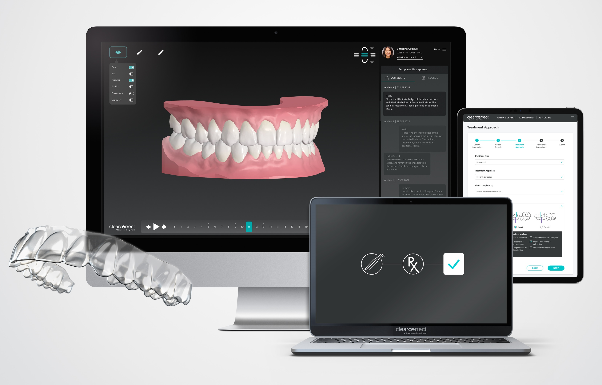
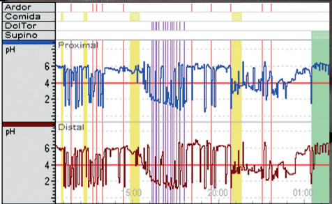

Somos un equipo multidisciplinario enfocado en diagnosticar y tratar tus síntomas, molestias e inseguridades, de manera oportuna, personalizada y con altos estándares de innovación y calidad.
Tenemos un concepto único e integral, juntando dos grandes áreas: Área Dental y Área Gástrica. Adicionalmente, contamos con un laboratorio propio para desarrollar nuestras propias soluciones. Definimos en conjunto tus necesidades, diseñamos y luego ejecutamos.
Te entregaremos una experiencia única. Ven a conocernos!

Servicios
Contáctanos para brindarte mayor asesoría e información sobre nuestras especialidades y valores.

Clínica Dental

Laboratorio Dental

Laboratorio Gastroenterología
Existe gran parte de la población con inseguridades y malestares que muchas veces se dejan pasar por tiempo o recursos. En nuestra Clínica Biodentric, solucionamos tus problemas dentales con un equipo de Odontólogos especializados abocados a lo que tú necesites y puedas verte mucho mejor.
Además, sabemos que muchas veces tenemos molestias gastrointestinales como distensión abdominal y reflujo pero no hemos llegado al diagnóstico oportuno para tratarlas. Es por esto que también en nuestra clínica contamos con equipos tecnológicos y una enfermera clínica especialista en realizar los procedimientos diagnósticos para que puedas sentirte mejor.
La cartera de servicios será la siguiente: tratamientos dentales realizados por odontólogos especializados en diversas áreas y además exámenes gástricos como Test de Aire Espirado de Lactulosa, Lactosa y Fructosa, phmetría de 24 horas con o sin impedanciometría.
Misión: La misión de la Clínica Biodentric es facilitar el diagnóstico y tratamiento oportuno de los pacientes con una atención humanizada y con altos estándares de calidad.
Visión: Ser la primera institución privada en la Región Metropolitana que integra el área dental y el área gástrica, líderes en las consultas y en procedimientos, comprometidos con la entrega del mejor servicio de salud para los pacientes, basado en la empatía, compromiso y profesionalismo.